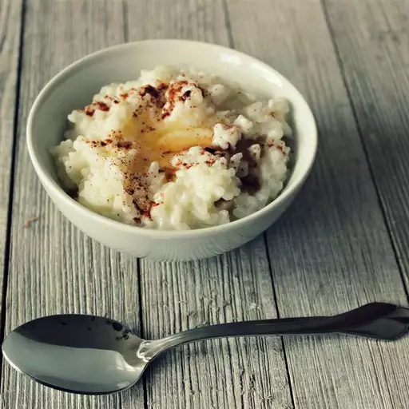

Scandynavian Style Rice Porridge

Description
This is a delicious rice dessert known in our family as 'Rumagrit.' It came down through our family from Mary Beth B. She is the woman who deserves all the credit for this, and we are posting it in her name.
Ingredients
- 8 whole green cardamom pods, lightly crushed to remove seeds, discarding pods
- ½ gallon whole milk
- 1 cup uncooked white rice
- 1 cup unsalted butter
- 1 cup sugar
- 3 tablespoons unsalted butter, or amount desired
- 1 teaspoon ground cinnamon
Directions
- Using a rolling pin, crush the cardamom seeds until very fine. Place the cardamom, milk, rice, and butter into a deep, heavy pan. While slowly stirring the milk mixture, cook over medium heat for 90 minutes. Lower the heat if necessary to prevent the milk from boiling or overheating. Stir in the sugar, and continue cooking until the mixture thickens, about 15 minutes more.
- Pour the rice mixture into a serving bowl. Place 3 tablespoons butter on top, and allow to melt. Dust with cinnamon. Serve warm or cold.